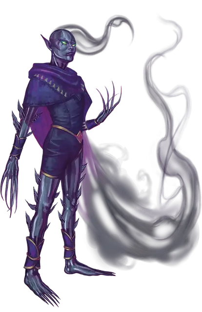

Нинтра Сиотта
Nintra Siotta
Большая Фея, хаотично-злая, именной НИП

Класс Доспеха 17
Хиты 306 (36к10 + 108)
Скорость 40 футов, летая 40 футов (парит)
| мод | спас | ||
|---|---|---|---|
| СИЛ | 16 | +3 | +8 |
| ЛОВ | 24 | +7 | +12 |
| ТЕЛ | 16 | +3 | +3 |
| мод | спас | ||
|---|---|---|---|
| ИНТ | 17 | +3 | +3 |
| МДР | 15 | +2 | +7 |
| ХАР | 24 | +7 | +7 |
Навыки Восприятие +7, Обман +12, Проницательность +7
Иммунитет к состояниям очарование, ошеломление, истощение
Чувства истинное зрение 60 футов, пассивное Восприятие 17
Языки Общий, Сильван, Эльфийский
Опасность 16 (15000 опыта)
Бонус мастерства +5
Особенности
Легендарное сопротивление (3/день). Если Нинтра проваливает спасбросок, она может вместо этого сделать спасбросок успешным
Черта характера. "У меня нет терпения к тем, кто меньше меня... и все кругом меньше меня."
Идеал. "После того, как я уничтожу Королеву Воздуха и Тьмы за ее слабость и дерзость, я займу свое законное место во главе Сумеречного Двора."
Привязанность. "У меня много сторонников в Сумеречном Дворе, которые готовы целовать землю, по которой я хожу. Они заслуживают достойного их любви покровителя."
Слабость. "Почему я должна беспокоиться о планах других? Никто не сравнится со мной в хитрости."
Действия
Мультиатака. Нинтра совершает две атаки.
Когти. Рукопашная атака оружием: +12 к попаданию, досягаемость 5 фт., одна цель. Попадание: 12 (2к4 + 7) колющего урона.
Осколки тени. Дальнобойная атака заклинанием: +12 к попаданию, дистанция 120 фт., одна цель. Попадание: 10 (1к6 + 7) урона некротической энергией и если целью является существо, оно должно преуспеть в спасброске Телосложения Сл 20, иначе станет отравленным до конца своего следующего хода.
Использование заклинаний. Нинтра может накложить одно из следующих заклинаний, используя Харизму в качестве базовой характеристики (Сл спасброска 20) и не нуждаясь в материальных компонентах:
• 3/день каждое: рассеивание магии [dispel magic], огонь фей [faerie fire], отражения [mirror image]
Буря разбитых стёкол (Перезарядка 6). Нинтра нацеливается на точку, находящуюся в пределах 60 футов от неё и создает центрированную на ней сферу радиусом 20 футов из вращающихся стеклянных осколков. Каждое существо в сфере должно совершить спасбросок Ловкости Сл 20, получая 28 (8к6) рубящего урона в случае провала или половину этого урона в случае успеха. Если Нинтра тоже находится в области сферы, осколки не причиняют ей никакого вреда.
Легендарные действия
Нинтра может совершить 3 легендарных действия, на выбор из представленных ниже вариантов. За один раз можно использовать только одно легендарное действие, и только в конце хода другого существа. Нинтра восстанавливает использованные легендарные действия в начале своего хода.
Атака. Нинтра совершает одну атаку.
Фейский шаг. Нинтра может телепортироваться на расстояние до 30 футов в свободное пространство, находящееся в её поле зрения.
Удары тени (стоит 2 действия). Когда она находится на ярком или тусклом свете, Нинтра заставляет свою тень атаковать находящееся в пределах 10 футов от неё существо. Её тень совершает две атаки когтями, каждая атака идентична атаке когтями Нинтры, за исключением того, что наносит урон психической энергией вместо колющего.
Действия логова
При значении инициативы «20» (в случае ничьей проигрывает всем конкурентам) Нинтра может совершить действие логова, чтобы вызвать один из следующих эффектов; при этом она не может использовать один и тот же эффект два раунда подряд:
• Нинтра нацеливается на одну из рам с теневым стеклом в своем логове, заставляя стекло разлететься вдребезги. Каждое существо в пределах 20 футов от взрыва должно совершить спасбросок Ловкости Сл 18, получая 13 (3к8) колющего урона в случае провала или половину этого урона в случае успеха. Осколки превращаются в пар, а при следующем значении инициативы 20 рама возвращается в изначальное состояние.
• Нинтра нацеливается на одну из рам с теневым стеклом в своем логове, ненадолго превращая его в кружащийся вихрь. Одно существо по её выбору в пределах 20 футов от рамы должно преуспеть в спасброске Силы Сл 20, иначе оно будет втянуто в вихрь получая 11 (2к10) урона некротической энергией. После чего существо телепортируется в свободное пространство в пределах 5 футов от другой рамы с теневым стеклом в логове Нинтры (определяется случайным образом)
Описание
Хаотично-злая архифея Нинтра Сиотта была давным-давно изгнана из Сумеречного Двора Королевой Воздуха и Тьмы. Нинтра известна на Фаэруне под тремя титулами: Принцесса Полумрачного Стекла, Леди Ужасных Предзнаменований и Искательница Трех Корон. Она выглядит как гуманоид из дымчато-серого стекла с ростом в 9 футов, окутанный пожирающим свет плащом тьмы.
Глаза Нинтры горят зеленым огнем, голос музыкален и обладает высоким тембром. Обман для неё естественен, но заточение в Истории Писца сделало ее нетерпеливой и склонной к телепатическим вспышкам ярости, выдающими её жестокую натуру.